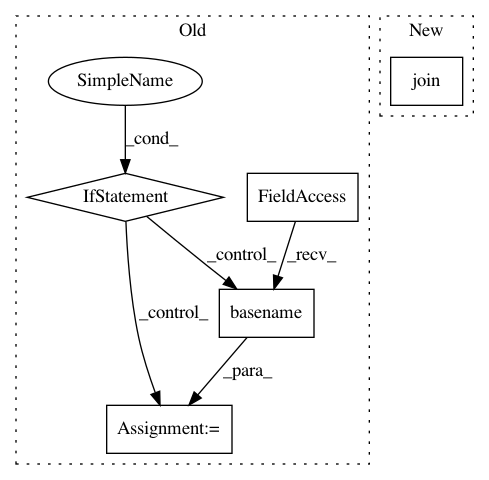

df71840db408be17d18e1570fd4281e596e6429b,perfkitbenchmarker/virtual_machine.py,BaseVirtualMachine,RemoteCopy,#BaseVirtualMachine#Any#Any#Any#,253
Before Change
if ":" in file_path:
// Scp doesn"t like colons in paths.
file_path = file_path.split(":", 1)[1]
if not remote_path:
remote_path = os.path.basename(file_path)
remote_location = "%s@%s:%s" % (
self.user_name, self.ip_address, remote_path)
scp_cmd = ["scp", "-P", str(self.ssh_port), "-pr"]
scp_cmd.extend(vm_util.GetSshOptions(self.ssh_private_key))
After Change
// scp doesn"t like colons in paths.
file_path = file_path.split(":", 1)[1]
// Replace the last instance of "\" with "/" to make scp happy.
file_path = "/".join(file_path.rsplit("\\", 1))
remote_location = "%s@%s:%s" % (
self.user_name, self.ip_address, remote_path)
scp_cmd = ["scp", "-P", str(self.ssh_port), "-pr"]
In pattern: SUPERPATTERN
Frequency: 3
Non-data size: 5
Instances
Project Name: GoogleCloudPlatform/PerfKitBenchmarker
Commit Name: df71840db408be17d18e1570fd4281e596e6429b
Time: 2015-05-27
Author: ehankland@google.com
File Name: perfkitbenchmarker/virtual_machine.py
Class Name: BaseVirtualMachine
Method Name: RemoteCopy
Project Name: mlflow/mlflow
Commit Name: c67c1826c2776b97d3f2b4a38cd864329d15f480
Time: 2018-11-10
Author: 39497902+dbczumar@users.noreply.github.com
File Name: mlflow/sklearn.py
Class Name:
Method Name: save_model
Project Name: mlflow/mlflow
Commit Name: 1b3b9965c20e4d0fd6541182705b7fb2b4b669bc
Time: 2018-11-12
Author: 39497902+dbczumar@users.noreply.github.com
File Name: mlflow/spark.py
Class Name:
Method Name: save_model